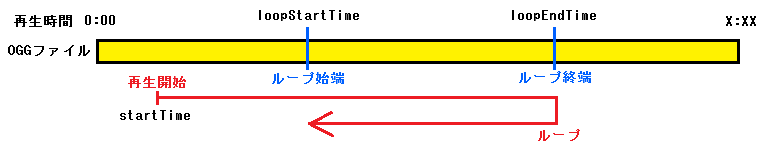

命令リファレンス
命令リファレンス
Ymplayer.setOggLoopEndTime
Oggのループする再生位置(ループ終端)を変更します。
※ このメソッドの後に、updatePlayInfo()を呼び出すことで、MusicPlayerに反映されます
書式
setOggLoopEndTime(loopEndTime)
- loopEndTime
- ループする再生位置(ループ終端)をミリ秒単位で指定(1～(再生するoggの総再生時間) ＆ loopStartTime + 40 以上)、指定しないなら0
【startTime, loopStartTime, loopEndTime の関係】

戻る